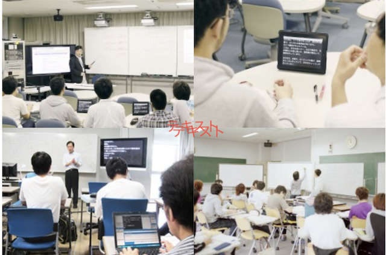

①カスタマージャーニーマップで見つけた考察を元に、
・聴覚障害者にとっての会話（コミュニケーション）の価値観、世界観を調査する。
・他大学での取り組みを調べ比較する
②事前調査アンケートにて、感情に関して健聴者・聴覚障害者の間で違うことがわかった。
今後は感情によって行動が変わるのか、聴覚障害者にに限らずに異なった障害を患った方の感情に関する論文を読んでいく。
③平塚もう学校の方とお会いして刺激を受ける。
他大学での聴覚障害者に向けた取り組みや支援を、神奈川大学と比較する。

筑波技術大学とは、視覚障害・聴覚障害を持つ人を対象とした日本国内唯一の大学である。(健常者は入学できない、、！)
言わずもがな、日本で一番理解が進んでいる学校である。
視覚教材、手話、口話、板書等、授業では様々伝達方法を用いて内容を伝える工夫がされている。情報バリアのない分かる実感が得られる。

短焦点プロジェクタ・ホワイトボード・ディスプレイなどを複数配置する講義では、
資料・板書・情報保障（手話通訳や文字通訳等）などの様々な視覚的情報を必要に応じてアレンジし表示できるようになっている。
また、講師・学生間での質疑応答や議論などが自由なレイアウトで授業が行えるような机を採用している。

小型プロジェクタを学生の席に配置し、文字通訳・手話通訳・講師の様子などを机の上に表示することで情報保障が途切れないように工夫をしている。

国内の一般大学では障がい者支援室の規模が一番大きく、手厚い保証が得られる。
健常者の学生と障害を持った学生の両者が通っており、とても理想的な形である。
（神大もこういったカタチにしたいなあ！！）
2名のパソコン通訳者が、先生の話や学生の発言などの音声情報を連係してパソコンに入力する方法。
2名同時に入力するため、基本的に待機者のメモ等は必要ない。
専用のアプリケーションを使うので履歴で授業のおさらいができる。

遠隔情報保障システム「T-TAC Caption」を使用した支援。
スマートフォンやタブレットに専用のアプリケーションをインストールし、音声配信と字幕受信を行うシステムである。このシステムにより、支援者は必ずしも聴覚障がい学生と同じ教室内にいる必要はなく、離れた場所（別キャンパスや自宅など）から支援することが可能である。

我が神奈川大学選手、今年から突然SDGs（持続可能な開発目標）の実現に向けた活動を始めました。
さて、どのような手厚い支援がされているのか！！
１名のノートテイカーが、先生の話や学生の発言などを紙媒体やタイピングでサポートする。
・支援が手厚い大学は専用のHPがあったりと、サポートの体制が積極的である。
・より多くの障害を持った学生を受け入れようという姿勢が見える。
・大学規模でシステムが用意されている。(お金が出されているという意味で)
→専用のシステム・アプリケーションが導入してある。
→何か開発したら神大でも導入してもらえるのではないか、、！！
・他大学は障害者支援の歴史があり、歴史を重ねてきた上での子もサポート体制がある。
→神大もまだ一年目であり、ここからがスタートである。
→その手探り状態の中で、佐藤の行動がこれからの神大のサポート体制を変えられるのでは、、！